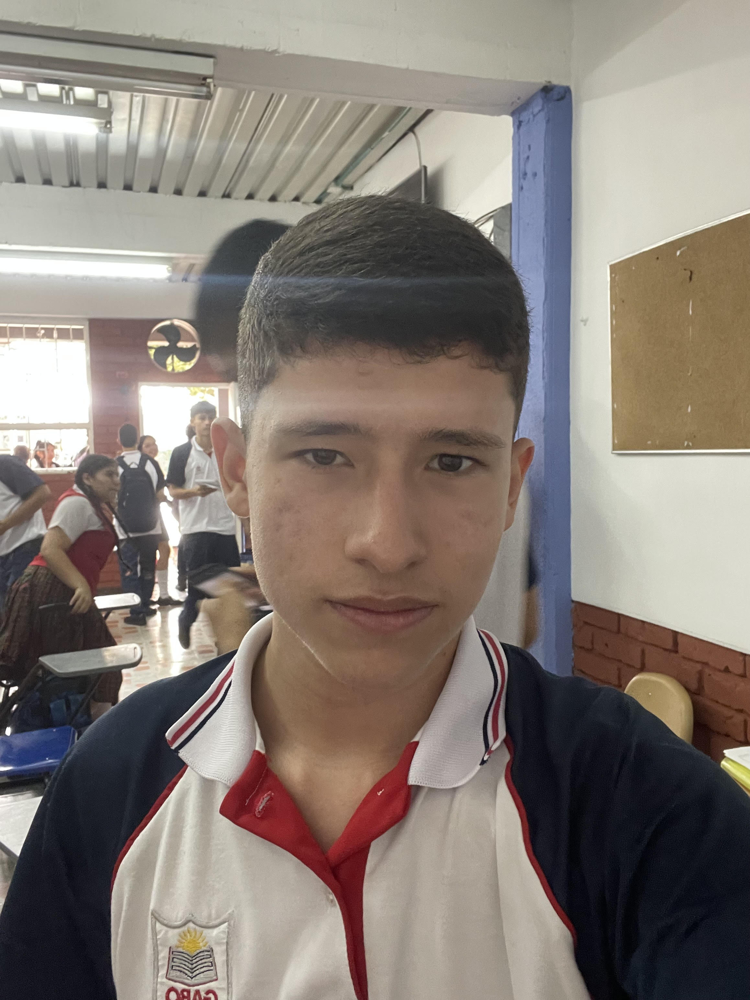

PERFIL

Juan Felipe Aguirre
17 años
üìû 315 898 3571
üìç Cartago,Valle del Cauca
Soy una persona responsable, con habilidades para conducir, orientarme en la ciudad y respetar las normas de tránsito. Busco una oportunidad para desarrollarme profesionalmente y aportar con seguridad y compromiso.
Habilidades
- Conducir
- Transporte de personas
- Conocimiento y respeto por las normas de tránsito
- Orientación y ubicación en la ciudad
- Conducción preventiva y segura
Educación
- Bachillerato en curso 11 – Colegio I.E.GABO
Experiencia
- Conductor aprendiz en entornos urbanos
- Participación en simulacros y capacitaciones de seguridad vial